완벽한 사례 대신, 직접 부딪힌 기록을 가져왔습니다
마케팅과 CXD, 두 팀이 한 달 동안 AI와 함께 만들고 부딪힌 기록
두 번째 AI Best Practice Session 현장 노트
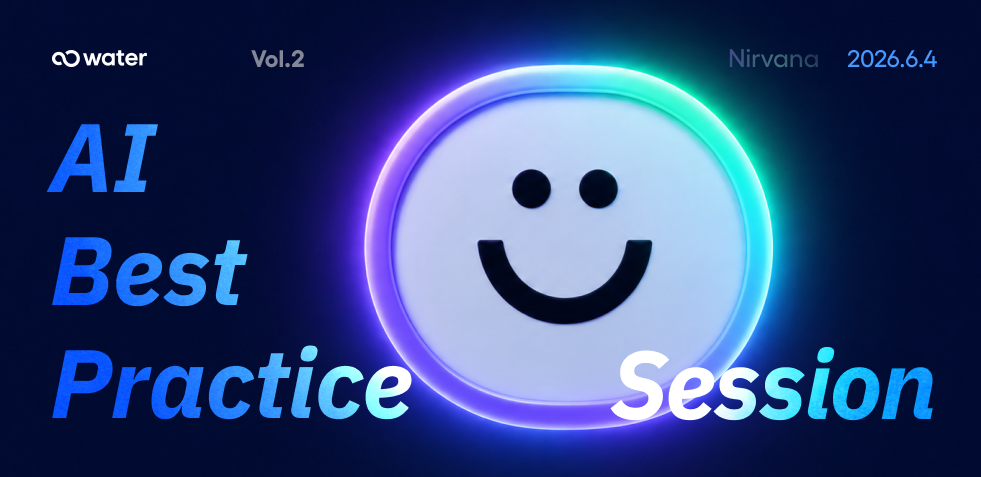
“완벽하게 만들지 마세요.
일단 작동하는 버전부터 만들어 보세요.” — 워터의 두 번째 AI Best Practice Session
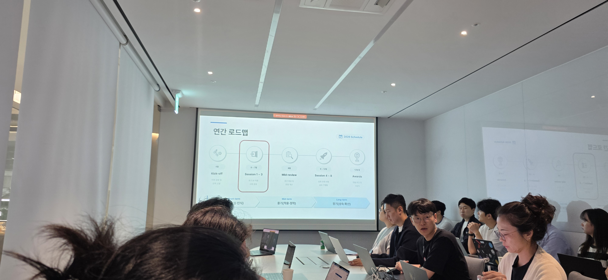
안녕하세요, 워터(Water) BXD팀입니다.
지난 5월, 첫 번째 AI Best Practice Session의 열기를 기억하시나요? 한 달 후, 6월 4일 목요일 오후. 두 번째 세션이 다시 열렸습니다. 이번에는 마케팅팀의 김다현 팀장님과 CXD팀의 백승기 팀장님이 들고 온 한 달간의 기록을 나누는 자리였습니다.
두 발표는 서로 다른 방식으로 같은 메시지를 보여줬습니다. 마케팅팀은 "잘 된 사례보다 망한 썰이 더 배움이 된다"는 솔직한 고백으로, CXD팀은 "AI가 잘하는 일과 사람이 잘하는 일을 어떻게 나눌 것인가"라는 본질적인 질문으로요. 두 팀 모두 결국엔 — 직접 부딪혀 봐야 보이는 것들이 있다는 이야기였어요.
오늘 BXD팀이 직접 취재해 들고 온 이야기, 두 번째 AI Best Practice Session 현장 기록을 시작합니다.
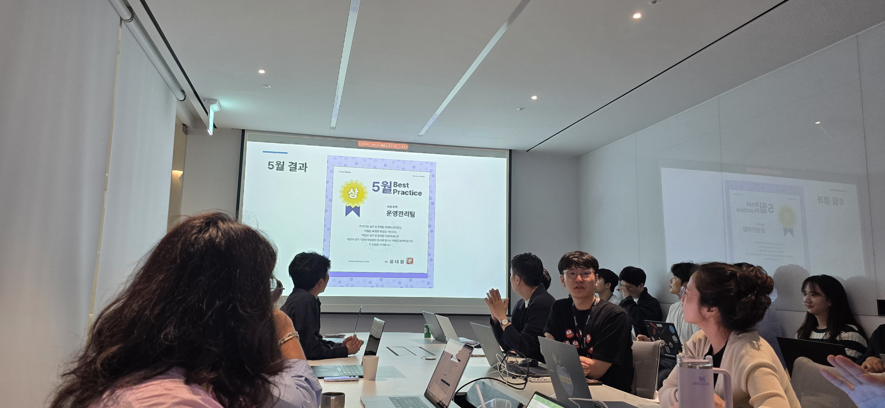
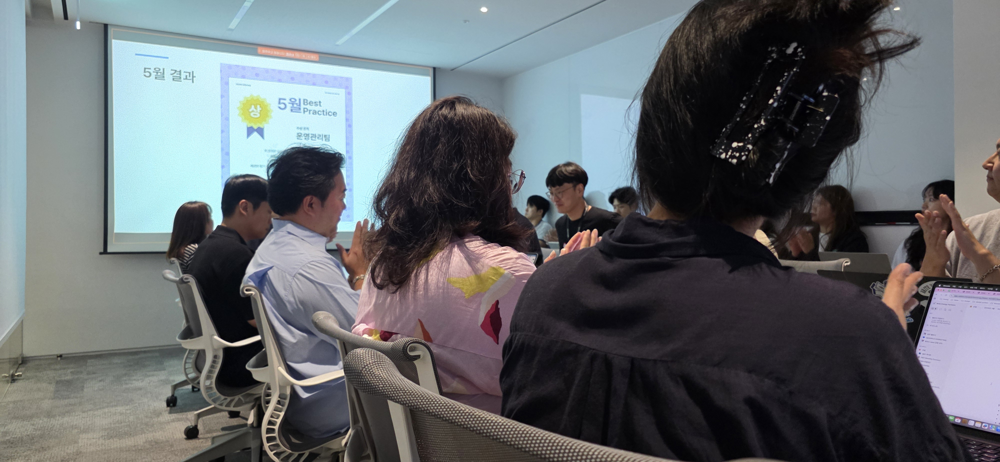
Opening5월의 첫 번째 베스트 프랙티스 팀이 발표됐습니다
세션은 지난 5월 1회차 베스트 프랙티스 팀 시상으로 문을 열었습니다. 압도적인 동료 투표 1위로 운영관리팀이 첫 번째 수상의 영광을 안았습니다. 첫 회차에서 비개발자로서 AS 관리 시스템을 직접 만들어낸 그 사례가 워터 크루들에게 큰 울림을 줬다는 평가였어요.
그리고 또 하나의 메시지가 이어졌습니다. AI 툴을 활용할 때 발생하는 비용은 케이스별로 자유롭게 개진해 달라는 안내였어요. 부서마다 필요한 툴이 다르고 우선순위도 다르니, 일괄 결제보다 개별 승인 방식으로 가겠다는 결정이었습니다.
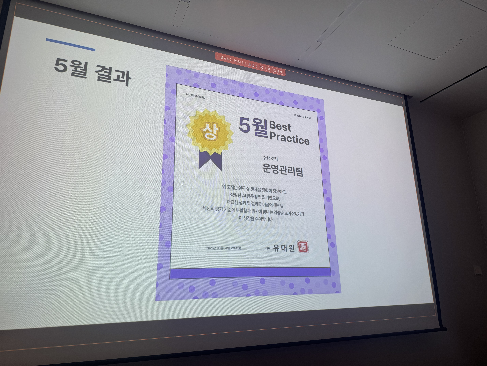
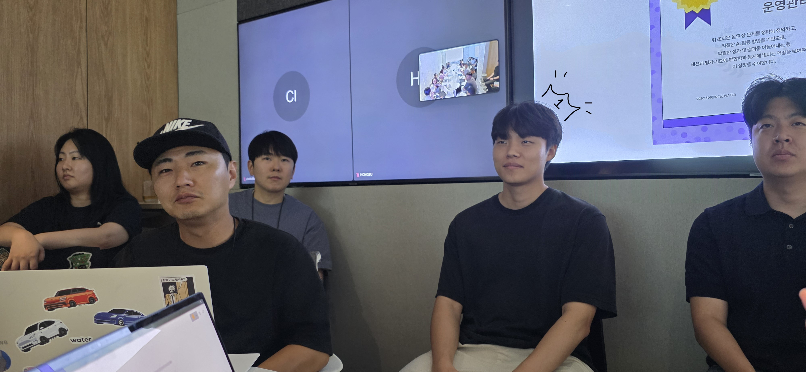
01이번 세션은 어떻게 구성됐을까
이번 회차는 첫 번째 회차의 1시간 운영을 1시간 30분으로 확대했습니다. 이전 설문에서 "타이트한 운영도 좋지만, 발표자도 청중도 좀 더 편하게 호흡할 수 있는 시간이 필요하다"는 의견이 모였기 때문이에요. 그래서 이번엔 두 발표자의 본 발표 + 자유로운 QnA와 토론까지 자연스럽게 흐를 수 있는 구조였습니다.
김다현 팀장 망한 썰 — 워터 미디어 모니터링 대시보드 만들기
백승기 팀장 CAXD — 디자이너가 AI를 대하는 5가지 방법
A 트랙 · 마케팅팀잘 된 사례보단, 망한 썰이 더 배움이 됩니다
"여러 가지 아티클들을 읽다 보면 잘 된 사례는 솔직히 좀 꼴 보기 싫고요. 망한 썰들이 사실 가장 많은 도움을 주는 것 같아서, 망한 썰 위주로 좀 준비했습니다." 마케팅팀 김다현 팀장님의 첫 마디가 세션장의 분위기를 단번에 바꿔놨습니다.
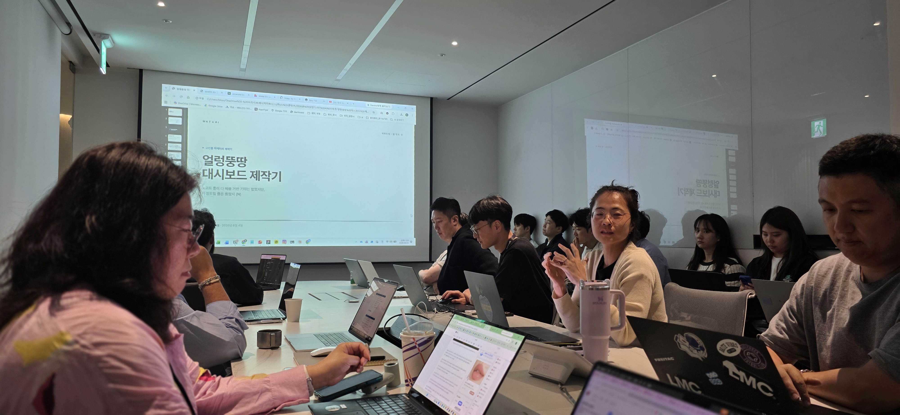
주눅들 필요는 없지만, 필요한 태도는 있다
요즘 SNS에는 "AI 안 쓰면 도태된다", "Claude Code 안 쓰면 퇴사 준비하세요" 같은 압박성 콘텐츠가 가득합니다. 김다현 팀장님은 그런 글들에 일부러 거리를 두면서 시작했어요. "주눅들 필요는 없어요. 하지만 개인적으로 필요한 태도는 있다고 생각합니다."
- 1. 내가 뭘 해결하고 싶은지부터. 툴은 일주일에 한 번씩 업데이트돼서 다 따라갈 수 없어요. 유행을 따라가기보다, 내가 해결하고 싶은 문제부터 충분히 고민하는 게 먼저입니다.
- 2. 일단 작동하는 버전부터. A부터 Z까지 완벽하게 만들 거야 보다는, 한 번 작동해 보는 버전을 먼저 만드는 게 필요합니다.
- 3. 코딩 마스터는 X, 작동 원리는 O. 직접 코딩을 익힐 필요는 없지만, 모르는 게 있으면 AI에 물어보는 성의는 필요해요. 작동 원리는 알아야 합니다.
- 4. AI는 기획 파트너로. "이거 만들어줘"가 아니라 "왜?"라는 질문을 자주 던지세요. 메타인지가 되면서 그제야 내 것이 됩니다.
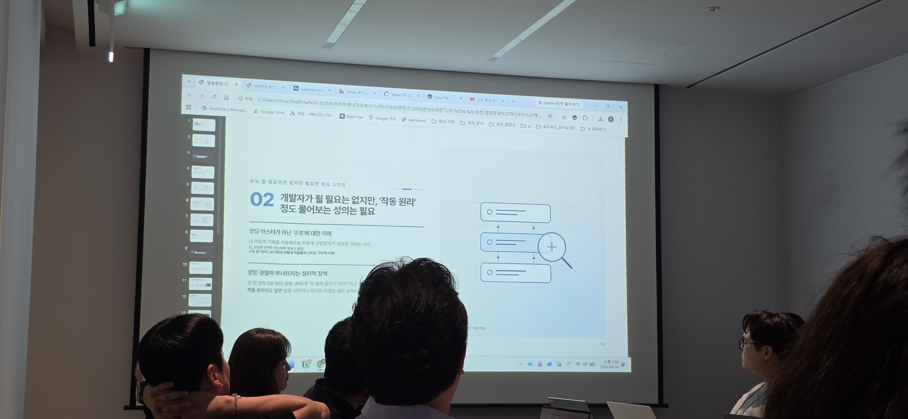
도전 — 워터 미디어 모니터링 대시보드
김다현 팀장님이 한 달간 도전한 과제는 전기차 충전 업계 미디어 모니터링 대시보드를 직접 만드는 것이었습니다. 기존에는 팀즈로 산발적으로 공유되는 기사들을 일일이 수동으로 확인해야 했고, 채팅 기반이라 세이빙도 어려웠어요. "그때 얘기했었던 그 URL, 그걸로 한번 영상해볼까요?"라고 하면 아무도 이해를 못하는 상황의 반복.
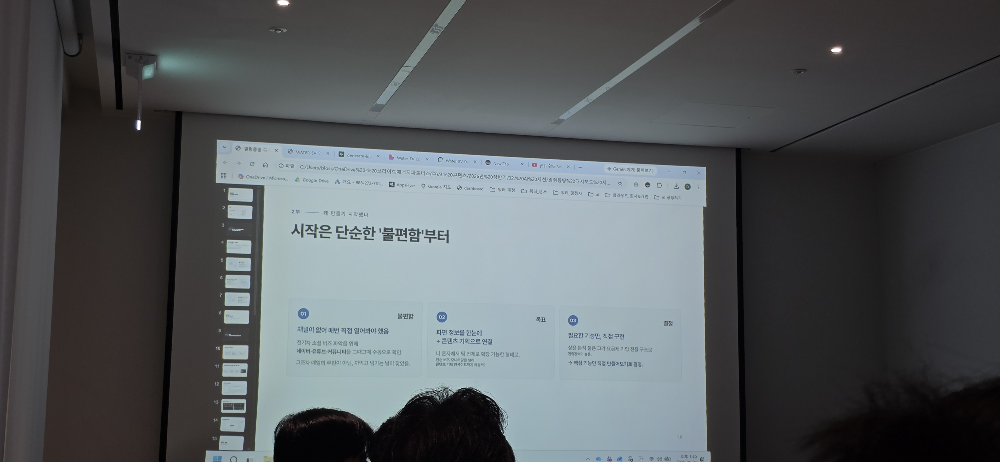
처음엔 상용 소셜 분석 툴을 검토했습니다. 하지만 너무 고가에 비즈니스 요금제까지 있어서 도입이 어려웠어요. "갓생 살기" 아티클을 보고 "이 정도는 할 수 있지 않을까?"라는 생각으로 직접 만들기에 도전했습니다.
먼저 매니페스트(Manifest)로 기능 기획서부터 만들었습니다. 와이어프레임까지 자동으로 짜주는 서비스라 "이거 될 것 같은데?" 싶은 자신감이 붙었어요. 200만 원 정도 들이면 가능할 줄 알았던 자신감.
그리고 본격적으로 조립을 시작했습니다. Claude AI를 메인 파트너로, Lovable로 UI를 만들고, Supabase로 DB를 두고, Gemini API로 콘텐츠 아이디어를 뽑는 구조였어요. 유튜브 / 네이버 / 구글 API까지 연동해 미디어 정보를 수집했습니다.
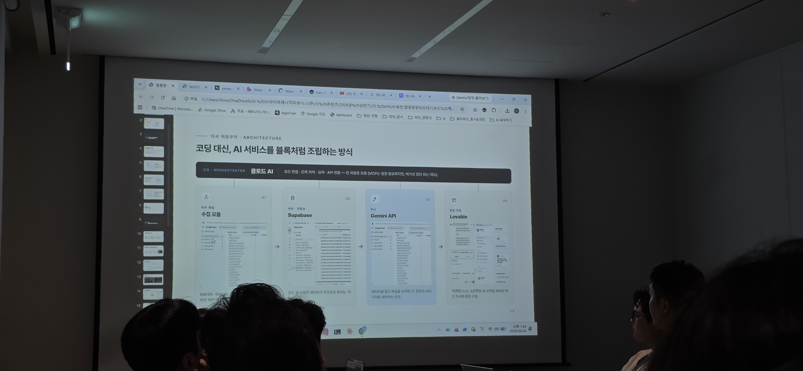
한 달 만에 완성된 데일리 브리핑 대시보드
"대시보드를 이렇게 만들었습니다. 실제로 한번 보여드릴게요." 발표 중반, 김다현 팀장님이 데모를 켰을 때 좌중이 가장 집중했던 순간이에요. 정말 작동하는 시스템이었거든요.
한 달 후 작동한 데일리 브리핑 대시보드는 의외로 다채로웠습니다.
- 오늘의 전기차 충전 이슈 — 워터·충전 업계 키워드로 선별된 메인 기사
- 유튜브 채널 모니터링 — 완성차, 전기차, 해외 충전, 인플루언서 채널 자동 수집
- 주간/격주 동영상 정리 — 2주치 콘텐츠를 한 번에 훑기
- 미디어·완성차 기사 — 키워드(수입차·전기차·전기차충전)로 분류
- 콘텐츠 아이디어 자동 생성 — Gemini API와 연동, 일 15개 한도
- 저장 기능 — 까먹지 않게 아이디어와 관심 채널을 저장
그리고… 망한 부분들
"결론은 실패였습니다. 겉보기에는 되게 그럴싸했거든요." 김다현 팀장님은 망한 부분을 숨기지 않고 패턴화해서 보여줬어요.
Field Report · 한 달 동안 부딪혀 본 6개 툴
각 AI 툴의 성격을 직접 부딪혀 본 후기
네 가지 AI를 동시에 굴린 김다현 팀장님이 정리한 각 툴의 특징입니다.
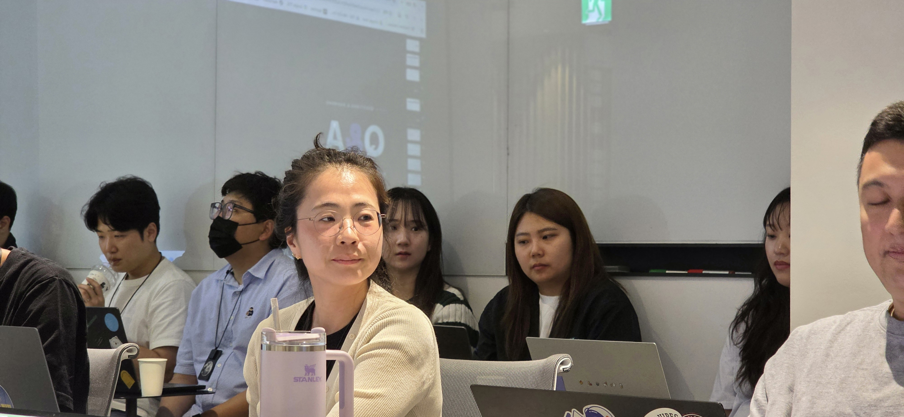
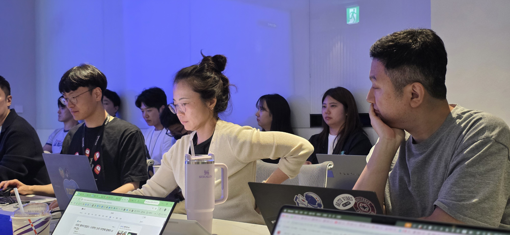
"망한 사례를 이렇게 솔직하게 공유해주시니까, 우리도 시도해볼 수 있겠다는 용기가 생겨요."
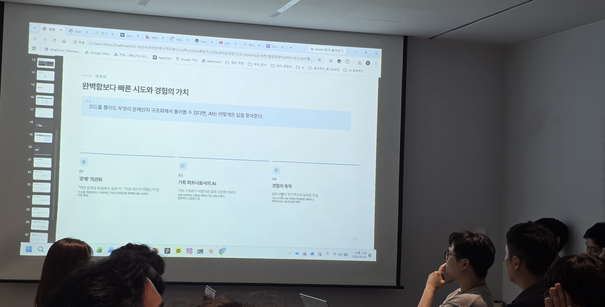
"이게 뭐 돈 아깝지 않냐고 하면, 저는 오히려 이런 실패를 해봐야 그다음에 세이브할 수 있다고 생각해요. 돈 아깝다기보다는 '이것도 기회 비용이다' 정도로 생각하시면 정신 건강에 좋습니다."
 Session Notes
Session Notes
Q. 한 달 동안 들어간 시간과 비용은요?
"업무 외 시간으로 주말 포함 2주 정도 들었어요. Claude Max 이미 초과했고, Lovable 크레딧 추가 결제, Gemini API 월 구독, Claude Design 세션 두 번 녹아서 추가 결제까지. 그래도 PM·디자이너·개발자 8명이 두 달 걸려야 했던 일이 혼자 2주에 됐다는 게 굉장히 싸게 산 경험이라고 생각합니다."
— 마케팅팀 김다현 팀장B 트랙 · CXD팀CAXD — 디자이너가 AI를 대하는 5가지 방법
CXD팀 백승기 팀장님의 발표는 톤이 또 달랐습니다. "디자이너가 AI를 대하는 방법"이라는 제목 아래 팀명에 A(AI)를 더해 CAXD로 짓고, 팀에서 실제로 적용 중이거나 테스트 중인 5가지 사례를 차례로 공유했어요.
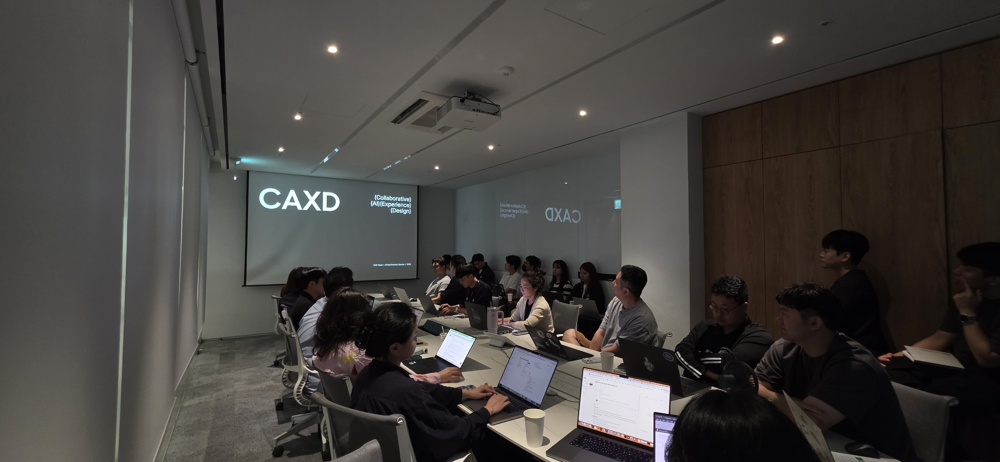
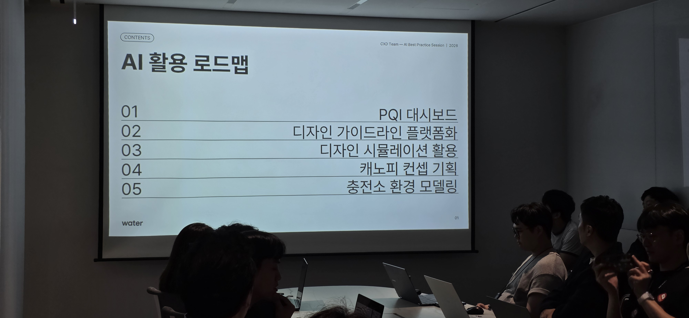
5가지 활용 사례
PQI(품질평가표·시공점검표)는 충전소 자산 상태와 시공 퀄리티를 관리하는 CXD팀의 핵심 자료입니다. 기존엔 현장 실사 → 엑셀 입력 → 업로드 → 대시보드 반영의 다단계 프로세스였어요. 이걸 AI를 통해 HTML 대시보드로 전환 중입니다. 현장에서 상태를 바로 업데이트하면 웹으로 즉시 반영되는 구조. 이번 달 안으로 세팅을 시작할 예정입니다.
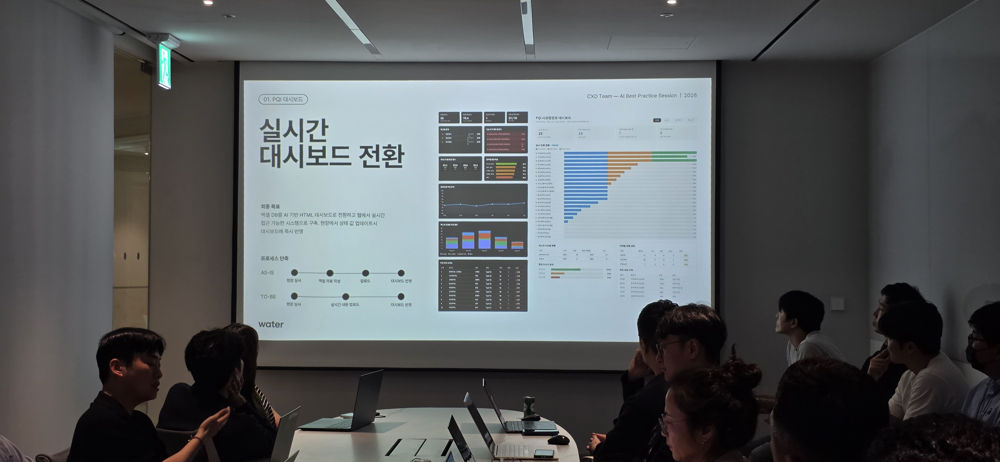
기존 가이드라인은 PDF로 배포하고 스크롤 열람하는 방식이었습니다. 이걸 웹 기반 양방향 플랫폼으로 전환 중이에요. 유관 부서뿐 아니라 협력사까지 링크로 접근 가능, 검색·다운로드·필터링 기능을 추가해 "문서 배포"가 아닌 "양방향 접근"으로 바뀝니다.
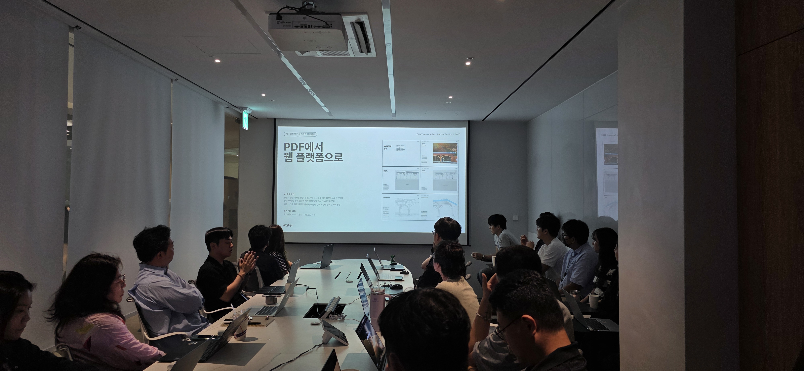
기존엔 캐노피의 조명 각도 하나를 바꾸려면 모델링 → 렌더링 → 조명값 수정 과정을 거쳐 최소 수십 분~한 시간이 걸렸습니다. AI로는 프롬프트만 바꾸면 컬러·조명·재질·시간대·기후가 빠르게 비교돼요. 야간 사진으로 변경하는 데 10분도 안 걸립니다. 결과물이 실사 수준이라 의사결정 속도가 비교 불가.
제로 베이스에서 디자인 시안을 뽑는 단계에도 AI를 적용했습니다. 워크플로는 이렇습니다: Claude로 프로젝트 목표·구조·예산·소재·환경 조건을 정리해 MD 파일로 만들고, 그 파일을 들고 ChatGPT나 Gemini로 옮겨 이미지를 생성합니다. 기획서와 레퍼런스가 명확할수록 결과물 품질이 가파르게 올라가요.
가장 도전적인 사례. 현장 사진 → 3D 데이터로 변환, 위성 사진 → 평면도 CAD 파일로 변환을 테스트 중입니다. Polycam, Luma AI Capture를 활용하고, Claude MCP로 설계 툴과 연동하는 흐름을 실험 중. 위성 사진 확보 경로가 제한적인 게 현재 이슈입니다.
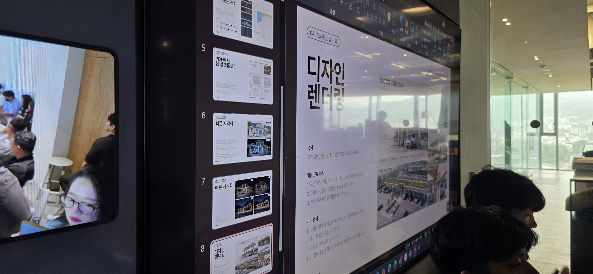
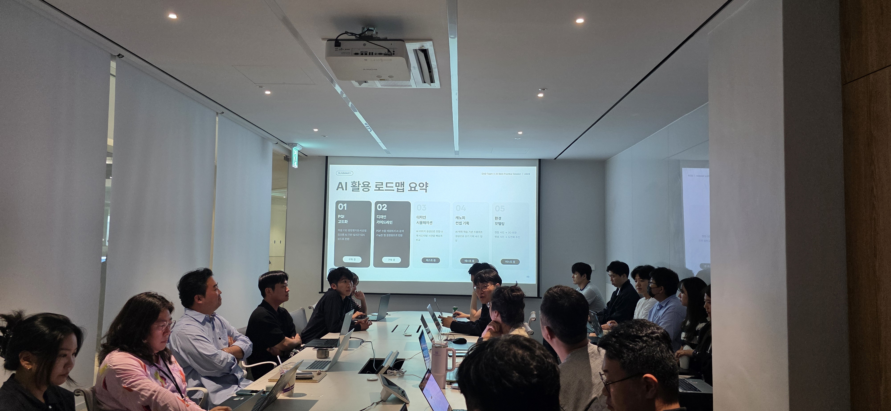
그래서, 무엇이 단축됐을까
5가지 사례가 실무에서 만들어낸 변화입니다.
잘하는 영역과 못하는 영역 — 일을 나누는 감각
가장 인상 깊었던 인사이트는 "AI에 다 맡기지 말자"라는 자기 절제였습니다. 백승기 팀장님은 디자인 작업을 실제로 돌려본 후 명확한 결론에 도달했어요.
- AI가 잘하는 것 — 방대한 데이터 분석, 리서치, 결과물 베이스 작업. "탁월합니다. 수준급 작업이 가능해요."
- 인간이 잘하는 것 — 디자인 감성, 엉뚱한 발상, 의도치 않은 아이디어. "AI는 평균값으로 수용하는 경향이 있어서, 이쪽은 사람의 몫입니다."
- 잘하는 영역은 맡기고, 못하는 영역은 사람이. "이 밸런스 조절이 일을 잘하는 데 있어서 중요한 시도라고 생각해요."
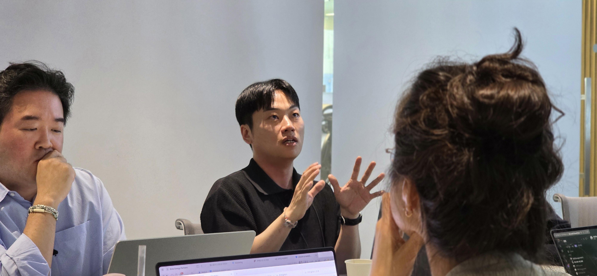
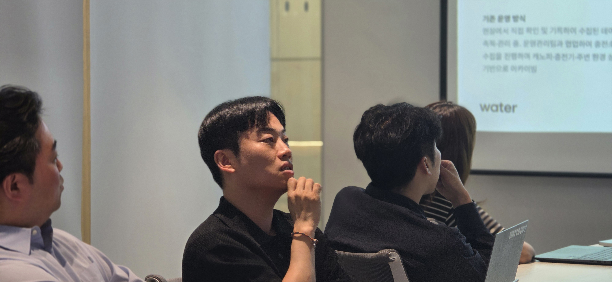
"AI에 다 맡기지 말자" — 디자인 감성의 영역에서 균형감을 강조한 발표.
"이제는 개개인이 부사수를 한 명씩 들이고 있다는 느낌이 커졌어요. 앞으로는 AI를 업무 효율과 디자인 품질을 향상시키는 실질적인 도구로 계속 발전시켜 나갈 생각입니다."
 Session Notes
Session Notes
Q. 디자이너의 프롬프트는 어떻게 다른가요?
"디자인 용어를 적극적으로 씁니다. '미니멀', '브랜딩 톤' 같은 일반인이 잘 안 쓰는 용어들. 그러면 디자인적으로 훨씬 가깝게 결과가 나와요. 심지어 '와꾸', '야마', '짜친다' 같은 비전문 용어도 잘 알아들어요. 수많은 사람들이 이미 AI를 교육시켜 놓은 것 같아요."
— CXD팀 백승기 팀장C 트랙 · Free Talk환각, 평균값, 그리고 설계자의 시대
두 발표가 끝나고 자유 토론으로 흐른 시간. 발표보다 더 솔직하고 깊은 이야기들이 오갔어요. 이번 회차에서 가장 많은 메모가 쏟아진 시간이기도 했습니다.
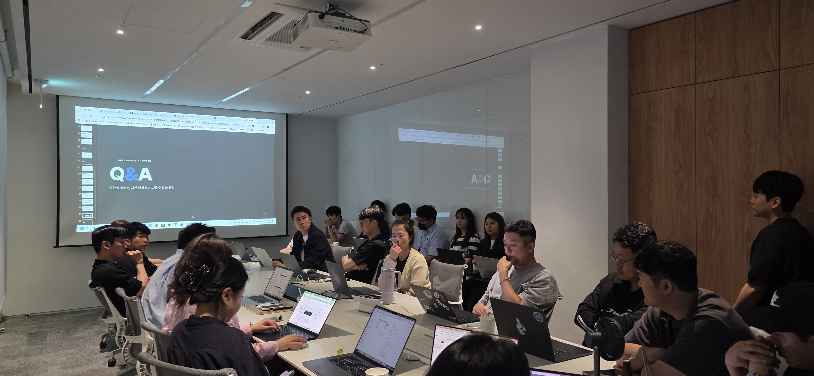
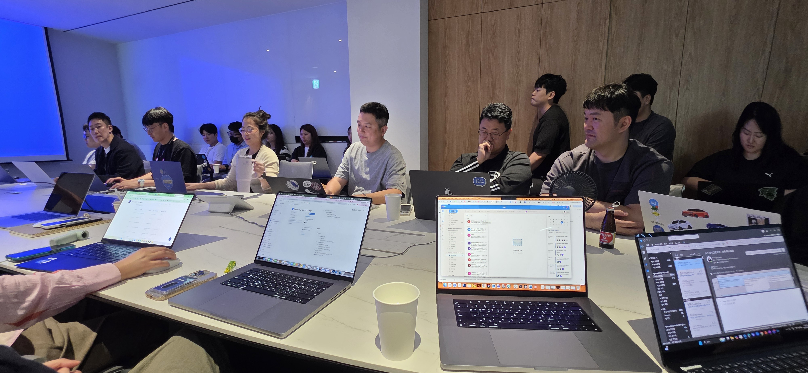
대표가 직접 부딪힌 4가지 함정
"여러분만큼 깊게 투입한 건 아니지만, 저도 요즘 꽤나 고난도 작업을 시도해보고 있어요." 대표가 직접 부딪힌 함정들이 토론의 시작이었습니다.
워터의 AI 활용 표준 워크플로
토론 중 정리된 워터의 표준 워크플로입니다. 누가 무엇을 어떻게 하는지에 대한 합의된 감각.
"부사수가 한 명 생긴 느낌" vs "사수가 AI고 내가 부사수"
가장 큰 웃음을 만든 대화. CXD팀 백승기 팀장님의 "부사수가 한 명 생긴 느낌"이라는 표현에, 누군가 즉시 받았어요. "저는 가끔 사수가 AI고 제가 부사수일 때가 있어요." 좌중이 다 같이 끄덕였습니다.
"중고나라 대표님이 직원 글쓰기를 다듬는 AI 윤문 도구를 만들어서, 내부 커뮤니케이션 글을 모두 3~4번 윤문해서 쓴다고 하더라고요. AI 루프에 가치 있는 글이 들어가는 거죠. 결국 이제는 설계자의 시대가 온 것 같아요."
 Session Notes
Session Notes
Q. 자유 토론에서 가장 인상 깊었던 한마디는요?
"AI는 평균값으로 수용하는 설계라서, 결국 신선함은 사람의 영역으로 남는다는 말. 그리고 이제는 '설계자가 가장 중요한 직무'라는 깨달음. 두 마디가 머릿속에 남았습니다."
— 자유 토론에 참여한 워터 크루
025월의 첫 베스트 프랙티스 팀
이번 회차에서 발표된 5월 1회차 결과를 정리하면 다음과 같습니다.
5월 Best Practice Team
동료 투표 + 대표 평가 종합
관리팀 압도적 1위 수상 동료 투표 만점에 가까운 점수
ONLY 평가 철학 네거티브 평가는 하지 않습니다
승인 AI 툴 비용 정책 개별 부서 필요에 맞춰 자율적으로
03시작은 작게, 변화는 함께
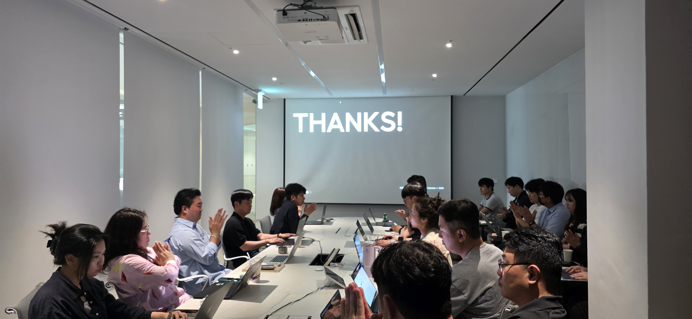
두 번째 세션을 관통한 메시지는 분명했습니다. 완벽하게 만들려고 하지 말 것. 일단 작동하는 버전부터 만들 것. 그리고 망한 썰을 솔직하게 공유할 것.
김다현 팀장님은 두 달에서 세 달 걸렸을 일을 혼자 2주에 시도해 봤고, 백승기 팀장님은 디자이너만의 감각으로 AI와의 일 분배를 정리했어요. 자유 토론에서는 "설계자가 가장 중요한 시대"라는 인식이 만들어졌습니다.
BXD팀이 이번 회차에서 가장 자주 들은 단어는 "왜?"였습니다. 시키는 대로 따라가지 않고 "왜 그래야 하는데?"라고 질문하는 습관. 그 작은 태도 하나가 결국 워터의 AI 활용 깊이를 만드는 것 같아요.
"무비판적으로 수용하기보다, '왜 그래야 되지?'라는 질문을 정말 자주 반복하면 그게 메타인지가 되면서 비로소 내 것이 됩니다."
대표가 처음 BP 세션 기획안에 적었던 마지막 문구는 "시작은 작게, 변화는 함께"였습니다. 이번 회차는 그 문장의 실천편 같았어요. 첫 회차에서 운영관리팀이 보여줬던 사례가 다른 팀에게 부담이 되지 않게, 누구나 자신의 보폭으로 시도할 수 있도록.
다음 충전은 7월에 시작됩니다. 이번엔 오후 시간으로, 더 여유로운 호흡으로요.